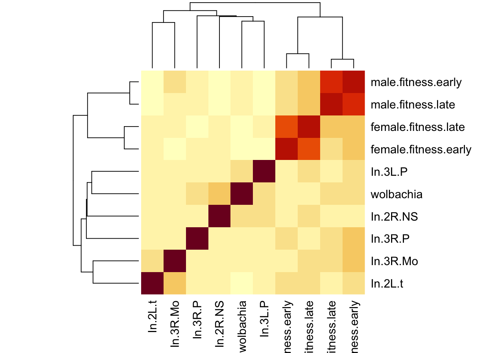

GWAS for fitness in Drosophila
Last updated: 2018-09-14
workflowr checks: (Click a bullet for more information)-
✖ R Markdown file: uncommitted changes
The R Markdown file has unstaged changes. To know which version of the R Markdown file created these results, you’ll want to first commit it to the Git repo. If you’re still working on the analysis, you can ignore this warning. When you’re finished, you can runwflow_publishto commit the R Markdown file and build the HTML. -
✔ Environment: empty
Great job! The global environment was empty. Objects defined in the global environment can affect the analysis in your R Markdown file in unknown ways. For reproduciblity it’s best to always run the code in an empty environment.
-
✔ Seed:
set.seed(20180914)The command
set.seed(20180914)was run prior to running the code in the R Markdown file. Setting a seed ensures that any results that rely on randomness, e.g. subsampling or permutations, are reproducible. -
✔ Session information: recorded
Great job! Recording the operating system, R version, and package versions is critical for reproducibility.
-
Great! You are using Git for version control. Tracking code development and connecting the code version to the results is critical for reproducibility. The version displayed above was the version of the Git repository at the time these results were generated.✔ Repository version: 449a929
Note that you need to be careful to ensure that all relevant files for the analysis have been committed to Git prior to generating the results (you can usewflow_publishorwflow_git_commit). workflowr only checks the R Markdown file, but you know if there are other scripts or data files that it depends on. Below is the status of the Git repository when the results were generated:
Note that any generated files, e.g. HTML, png, CSS, etc., are not included in this status report because it is ok for generated content to have uncommitted changes.Ignored files: Ignored: .DS_Store Ignored: .Rproj.user/ Ignored: analysis/.DS_Store Ignored: code/.DS_Store Ignored: data/.DS_Store Ignored: data/derived/.DS_Store Ignored: data/derived/output/.DS_Store Ignored: data/input/.DS_Store Ignored: figures/.DS_Store Untracked files: Untracked: code/Drosophila_GWAS.Rmd Untracked: data/derived/output/male_late_lm,.assoc.txt Untracked: data/derived/output/male_late_lm,.log.txt Untracked: data/derived/trimmed_DGRP.bk Unstaged changes: Modified: analysis/get_predicted_line_means.Rmd Modified: analysis/index.Rmd Modified: analysis/perform_gwas.Rmd Modified: analysis/plot_line_means.Rmd Modified: data/derived/output/DGRP_GRM.log.txt Modified: data/derived/output/female_early_bslmm.bv.txt Modified: data/derived/output/female_early_bslmm.gamma.txt Modified: data/derived/output/female_early_bslmm.hyp.txt Modified: data/derived/output/female_early_bslmm.log.txt Modified: data/derived/output/female_early_bslmm.param.txt Modified: data/derived/output/female_early_female_late.log.txt Modified: data/derived/output/female_early_lm.log.txt Modified: data/derived/output/female_early_lmm.log.txt Modified: data/derived/output/female_early_male_early.log.txt Modified: data/derived/output/female_late_lm.log.txt Modified: data/derived/output/female_late_lmm.log.txt Modified: data/derived/output/female_late_male_late.log.txt Modified: data/derived/output/male_early_lm.log.txt Modified: data/derived/output/male_early_lmm.log.txt Modified: data/derived/output/male_early_male_late.log.txt Modified: data/derived/output/male_late_lmm.log.txt Modified: figures/figure1.eps Modified: figures/figure2.eps
Expand here to see past versions:
| File | Version | Author | Date | Message |
|---|---|---|---|---|
| html | 449a929 | Luke Holman | 2018-09-14 | Build site. |
| html | e981b22 | Luke Holman | 2018-09-14 | Made GWAS page |
| Rmd | 90a30e9 | Luke Holman | 2018-09-14 | Made figures Rmd |
| html | 90a30e9 | Luke Holman | 2018-09-14 | Made figures Rmd |
library(ggplot2)
library(ggExtra)
library(dplyr)
library(tidyr)
library(grid)
library(gridExtra)
library(RColorBrewer)
library(showtext) # For fancy Google font in figures
font_add_google(name = "Raleway", family = "Raleway", regular.wt = 400, bold.wt = 700) # Install font from Google Fonts
# Load the predicted line means, as calculated by get_predicted_line_means
predicted_line_means <- read.csv("data/derived/predicted_line_means.csv", stringsAsFactors = FALSE)Variance and covariance in line mean phenotypes
Generally there is positive covariance between line means for different traits, and all 4 measures of fitness exhibit considerable phenotypic variance across lines.
lims <- c(1.1*min(apply(predicted_line_means[,2:5], 2, min)),
1.1*max(apply(predicted_line_means[,2:5], 2, max)))
fix.title <- function(x){
x[x == "female.fitness.early" | x == "femalefitnessearly"] <- "Female early-life fitness"
x[x == "male.fitness.early" | x == "malefitnessearly"] <- "Male early-life fitness"
x[x == "female.fitness.late" | x == "femalefitnesslate"] <- "Female late-life fitness"
x[x == "male.fitness.late" | x == "malefitnesslate"] <- "Male late-life fitness"
x
}
make_figure_1 <- function(){
nice.plot <- function(df, v1, v2){
formula <- as.formula(paste(v2, "~", v1))
model <- summary(lm(formula, data = df))
r2 <- format(model$r.squared %>% round(2), nsmall = 2)
slope <- format(model$coefficients[2,1] %>% round(2), nsmall = 2)
se <- format(model$coefficients[2,2] %>% round(2), nsmall = 2)
# print(model$coefficients[2,4]) # print p-value of the correlation
text1 <- paste("R^2 == ", r2, sep = "")
text2 <- paste("β = ", slope, " \u00B1 ", se, sep = "")
pp <- df %>%
ggplot(aes_string(x = v1, y = v2)) +
annotate("text", x=min(lims)+0.1, y=max(lims), label = text1, parse = TRUE, hjust= 0) +
annotate("text", x=min(lims)+0.1, y=max(lims)-0.4, label = text2, hjust= 0) +
geom_point(alpha = 0.7) +
stat_smooth(method = "lm", level = 0, colour = "tomato") +
xlab(fix.title(v1)) + ylab(fix.title(v2)) +
theme_classic() +
theme(text = element_text(family = "Raleway")) +
scale_x_continuous(limits = lims) +
scale_y_continuous(limits = lims)
if(v1 == "male.fitness.early" & v2 == "female.fitness.early") cols <- c("lightblue", "pink")
if(v1 == "male.fitness.late" & v2 == "female.fitness.late") cols <- c("steelblue", "deeppink2")
if(v1 == "male.fitness.early" & v2 == "male.fitness.late") cols <- c("lightblue", "steelblue")
if(v1 == "female.fitness.early" & v2 == "female.fitness.late") cols <- c("pink", "deeppink2")
ggExtra::ggMarginal(pp, type = "histogram", bins = 15, xparams = list(fill = cols[1]), yparams = list(fill = cols[2]))
}
p1 <- nice.plot(predicted_line_means, "male.fitness.early", "female.fitness.early")
p2 <- nice.plot(predicted_line_means, "male.fitness.late", "female.fitness.late")
p3 <- nice.plot(predicted_line_means, "male.fitness.early", "male.fitness.late")
p4 <- nice.plot(predicted_line_means, "female.fitness.early", "female.fitness.late")
full_plot <- grid.arrange(p1, p2, p3, p4)
cairo_ps("figures/figure1.eps", height = 9, width = 9)
full_plot
invisible(dev.off())
}
make_figure_1()
Expand here to see past versions of unnamed-chunk-2-1.png:
| Version | Author | Date |
|---|---|---|
| 90a30e9 | Luke Holman | 2018-09-14 |
Figure 1: Correlations among estimated line means for the four fitness components. The line means were estimated from Bayesian mixed models that account for block effects, and the non-independence of our early- and late-life fitness measurements.
Interaction plot showing trait covariance across lines
All possible types of lines were observed: some lines are uniformly bad, or uniformly good, or good in one sex or age class but bad in the other.
make_figure_2 <- function(){
out.file <- "figures/figure2.eps"
interaction.plot <- function(predicted_line_means, x1, x2, title, sex.or.age){
if(sex.or.age == "sex"){
x.labs <- c("Female", "Male")
cols <- c("red", "darkgrey", "blue")
} else {
x.labs <- c("Young", "Old")
cols <- c("green", "darkgrey", "purple")
}
df <- predicted_line_means %>% select_(x1, x2)
df$rank.x1 <- rank(df[,1]) / max(abs(rank(df[,1])))
df$rank.x2 <- rank(df[,2]) / max(abs(rank(df[,2])))
df %>% mutate(slope = rank.x1 - rank.x2,
line = 1:length(rank.x1)) %>%
gather(key = sex_or_age, value = fitness, rank.x1, rank.x2) %>%
mutate(fitness = fitness / max(fitness),
title = title) %>%
ggplot(aes(x = sex_or_age, y = fitness, group = line, colour = slope)) +
geom_line(size=0.8, alpha=.7) +
scale_color_gradient2(low = cols[1], mid = cols[2], high = cols[3]) +
scale_x_discrete(expand = c(0.1,0.1), labels = x.labs) +
theme_classic(15) +
theme(strip.background = element_blank(),
strip.text = element_text(hjust =0.1, face = "bold")) +
xlab(NULL) + ylab(NULL) +
facet_wrap(~title) +
theme(legend.position = "none")
}
cairo_ps("figures/figure2.eps", height = 9, width = 9)
grid.arrange(
interaction.plot(predicted_line_means, "female.fitness.early", "male.fitness.early", "Early-life fitness", "sex"),
interaction.plot(predicted_line_means, "female.fitness.late", "male.fitness.late", "Late-life fitness", "sex"),
interaction.plot(predicted_line_means, "female.fitness.early", "female.fitness.late", "Females", "age"),
interaction.plot(predicted_line_means, "male.fitness.early", "male.fitness.late", "Males", "age"),
ncol = 2, left = "Fitness rank among the 115 lines (0 is worst, 1 is best)", bottom = "Sex or age category"
)
invisible(dev.off())
}
make_figure_2()
Figure 2: The relative fitness ranks for each line, for four pairs of fitness traits. The y-axis was calculated by taking the adjusted line mean fitnesses, ranking them, and then dividing by the number of lines. The intensity and hue of the colour helps highlight genotypes that rank highly for one fitness component but not the other.
Relating fitness data to genotype
Check for effects of wolbachia and inversions
The Mackay lab have collected data on the Wolbachia infection status of each line, and recorded which chromosomal inversions each line carries. It is possible to statistically account for these variables when doing GWAS, but it makes the analysis more complex. Our fitness data are not correlated with the Wolbachia or inversion data, and in light of this we elected not to include them as predictors when writing our GWAS functions below. Additional analyses (not shown) suggest that the results are essentially identical if we run the models with these predictors included. However, including these parameters as random effects slows down the Bayesian GWAS a lot (and it already takes months of CPU time), so we elected to leave them out.
inv.data <- predicted_line_means %>%
left_join(read.csv("data/input/inversion genotypes.csv", stringsAsFactors = FALSE) %>%
mutate(line = paste("line_", line, sep = "")), by = "line") %>%
left_join(read.csv("data/input/wolbachia.csv", stringsAsFactors = FALSE) %>%
mutate(line = paste("line_", line, sep = "")), by = "line") %>% select(-line, -block)
inv.data[inv.data == "homozygous"] <- NA
inv.data[inv.data == "ST"] <- 0
inv.data[inv.data == "INV"] <- 1
inv.data[inv.data == "n"] <- 0
inv.data[inv.data == "y"] <- 1
for(i in 1:ncol(inv.data)) inv.data[,i] <- inv.data[,i] %>% as.numeric()
inversion.cors <- cor(inv.data, use = "pairwise.complete.obs")
heatmap(inversion.cors[!is.na(inversion.cors[,1]), !is.na(inversion.cors[,1])])
Expand here to see past versions of unnamed-chunk-4-1.png:
| Version | Author | Date |
|---|---|---|
| e981b22 | Luke Holman | 2018-09-14 |
| 90a30e9 | Luke Holman | 2018-09-14 |
Session information
sessionInfo()R version 3.5.1 (2018-07-02)
Platform: x86_64-apple-darwin15.6.0 (64-bit)
Running under: macOS Sierra 10.12.6
Matrix products: default
BLAS: /Library/Frameworks/R.framework/Versions/3.5/Resources/lib/libRblas.0.dylib
LAPACK: /Library/Frameworks/R.framework/Versions/3.5/Resources/lib/libRlapack.dylib
locale:
[1] en_AU.UTF-8/en_AU.UTF-8/en_AU.UTF-8/C/en_AU.UTF-8/en_AU.UTF-8
attached base packages:
[1] grid stats graphics grDevices utils datasets methods
[8] base
other attached packages:
[1] bindrcpp_0.2.2 showtext_0.5-1 showtextdb_2.0
[4] sysfonts_0.7.2 RColorBrewer_1.1-2 gridExtra_2.3
[7] tidyr_0.8.1 dplyr_0.7.6 ggExtra_0.8
[10] ggplot2_3.0.0
loaded via a namespace (and not attached):
[1] Rcpp_0.12.18 later_0.7.3 compiler_3.5.1
[4] pillar_1.3.0 git2r_0.23.0 plyr_1.8.4
[7] workflowr_1.1.1 bindr_0.1.1 R.methodsS3_1.7.1
[10] R.utils_2.7.0 tools_3.5.1 digest_0.6.15
[13] jsonlite_1.5 evaluate_0.11 tibble_1.4.2
[16] gtable_0.2.0 pkgconfig_2.0.1 rlang_0.2.1
[19] shiny_1.1.0 curl_3.2 yaml_2.2.0
[22] withr_2.1.2 stringr_1.3.1 knitr_1.20
[25] rprojroot_1.3-2 tidyselect_0.2.4 glue_1.3.0
[28] R6_2.2.2 rmarkdown_1.10 purrr_0.2.5
[31] magrittr_1.5 whisker_0.3-2 promises_1.0.1
[34] backports_1.1.2 scales_1.0.0 htmltools_0.3.6
[37] assertthat_0.2.0 xtable_1.8-2 mime_0.5
[40] colorspace_1.3-2 httpuv_1.4.5 labeling_0.3
[43] miniUI_0.1.1.1 stringi_1.2.4 lazyeval_0.2.1
[46] munsell_0.5.0 crayon_1.3.4 R.oo_1.22.0 This reproducible R Markdown analysis was created with workflowr 1.1.1